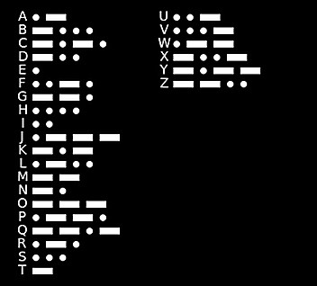

Morse-code
...
Welkom bij deze website!
Hier kan je de lampen aan en uit laten zetten, net zoals morse-code!
Om dit te doen moet je de volgende dingen doen:
- Verbinden met het juiste Wifi netwerk
- Naar de website gaan
- Een letter (of naam) invoeren
- Klik op Go
- Kijk nu naar de Philips Hue lampen
Spelletje
Je kan er ook een spelletje van maken! Je hebt minstens 2 spelers nodig. Hieronder staat de uitleg:
- Speler 1 voert een letter in, speler 2 mag deze niet zien.
- Speler 2 moet raden met behulp van de morse-kaart de letter raden
- Als speler 2 het heeft geraden worden de rollen omgedraaid
- Elke keer dat de letter goed is geraden krijgt de rader een punt
- Dit gaat door zo lang je wil.
